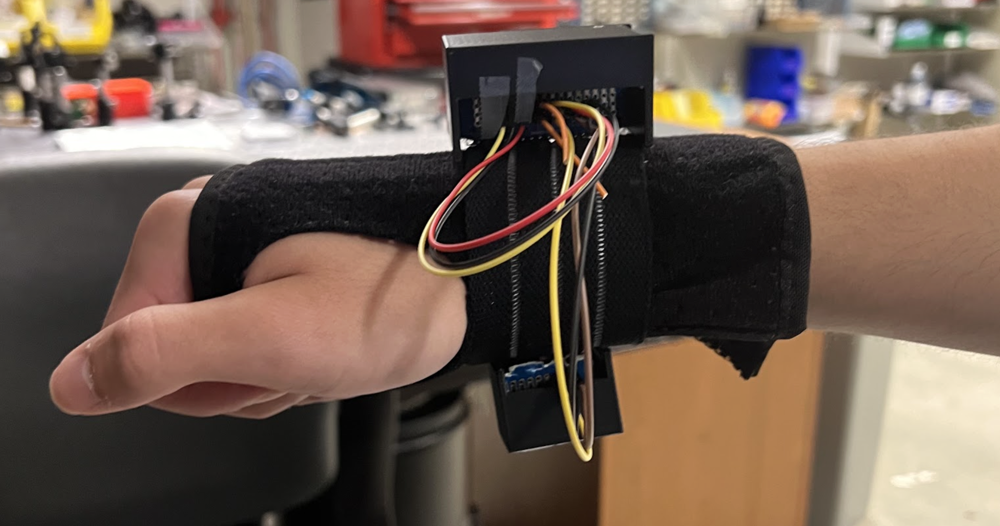
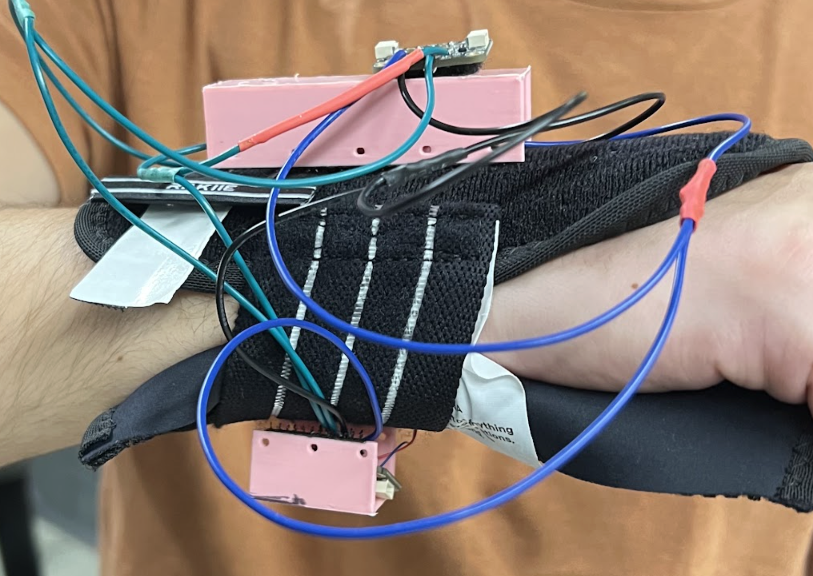
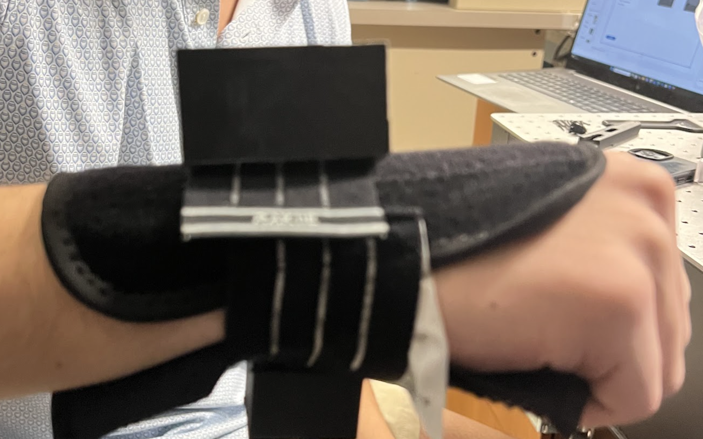
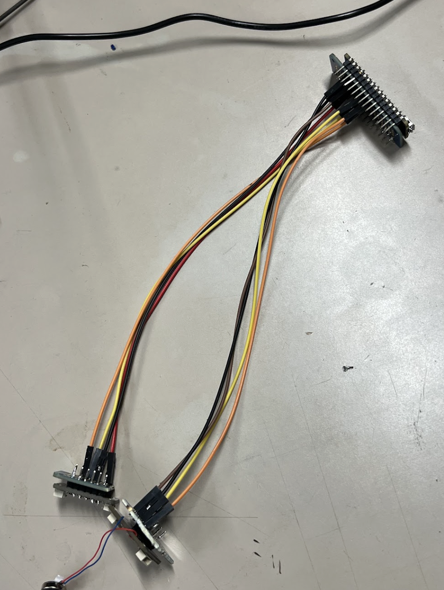

Project 09
Hand Tremor Stabilization Device
Mechanical design for a wearable prototype intended to detect essential tremors and test active vibration-based stabilization.

Presentation
I worked on the mechanical team, focusing on the wearable housing, wrist attachment, comfort, and integration with the electrical system. The full team presentation is shown below.
Device


